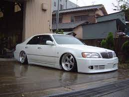

Japanese car manufacturers
Japan is home to some of the most well-known car manufacturers in the world. Companies like Nissan, Toyota, and Mazda have been producing high-quality vehicles for decades. These companies are known for their innovation, reliability, and performance. Whether you're looking for a compact car, a luxury sedan, or a sporty coupe, Japanese car manufacturers have something for everyone.
In the 80s and 90s Japan was going through an economic boom, parents were able to afford cars for their children and even the younger population could afford the newest sports car. This resulted in some of the greatest development in the automotive industry as well as indroduced many now imfamous cars.
Japanese car culture can take many shapes
Some drivers opt to keep their cars as is but many chose to modify them and make them their own. These modifications take many shapes, some modify for speed while other modify for the sake of turning heads or simply to their own personal taste no matter that the public thinks about it.
The Japanese car culture is not just about the cars themselves but also about the community that comes with it. Many car enthusiasts gather at car meets
Drifting
Drifting is a driving technique where the driver intentionally oversteers, causing loss of traction in the rear wheels, while maintaining control from entry to exit of a corner. A car is drifting when the rear slip angle is greater than the front slip angle, to such an extent that often the front wheels are pointing in the opposite direction to the turn. While for racing purists this may be a waste of rubber, for drifters, this is a way of life and a form of self expression. While drifting most often happens in closed courses, some drivers take to mountain passes or closed of roads at night to take the self expression to the nth degree.
VIP (Bippu)
While most modded cars are sporty coupes and hatchbacks, some opt for a more "VIP" approach. The economic boom in Japan equally introduced many luxary cars to the market and some of the more expressive owners chose to modify these large saloons and sedans with suede interiors, shiny paintjobs and flashy wheels tucked into the fenders almost certainly ruining the once luxary ride quality but putting passerbys in awe and surely a huge grin on the owners face.

Time attack
While much of Japanese car culture subsets are all about being different and expression, some car enthusiasts opt to take the core use of cars to the next level. Time attack racing is the dicipline of getting a car around a track in as little time as possible. Time attack takes place without other vehicle in the way to impede. The cars you'll see at a time attack event can vary from million dollar hyper cars to minivans. The times are devided into classes so almost any car has a class to be in. The time attack machines usually sport flashy liveries and huge aerodynamic componenets to keep them stuck to the ground during cornering.